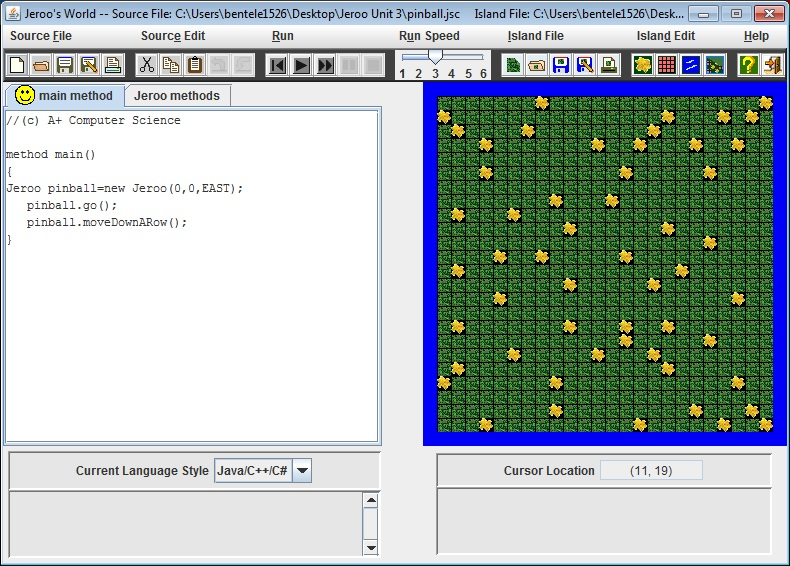
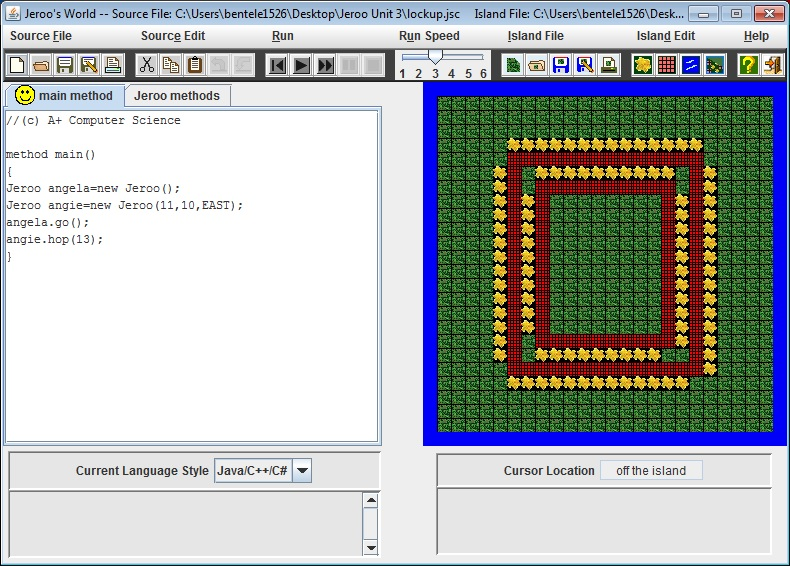

Unit 1
Description
In Unit 1 we learned the basic concepts of Jeroo. We were shown how to make a Jeroo character as well as set the jev and jsc files. We analyzed problems and came up with ways to solve them. Through this we learned the basic commands.
- How to create a Jeroo and give it flowers
- Basic commands: hop, toss, turn and pick flowers
Screenshots
Unit 2
Description
In Unit 2 we learned how to use methods to solve problems. We repeated commands in order to get the desired result.
- Finding patterns in order to solve the way we wanted
- Creating methods and figurring out the easiest way to incorporate them into our main method
Screenshots
Unit 3
Description
In Unit 3 we learned simple while and if loops that merged with our knowledge of methods. This helped us to learn faster ways of solving problems and keep us constantly thinking baout the best way to solve a problem.
- Methods: we know mastered the use of methods
- while and if statements
Screenshots
 Unit 4
Description
In Unit 4 we learned how to use loops as well as how to use lopps and methods in order to solve the problems we were presented with. Another concept learned was recursion, and how to intertwine recursion into our methods and loops.
- Recursion which is calling a method within itself
- while and if statements with two conditions